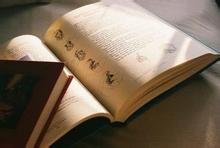
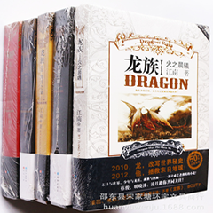

读书最大的好处是起到了修养身心 获得知识 开阔自己的视野 塑造正确的人生观价值观 还有学会与人相处 面对压力的时候的方法态度 至于挣钱嘛 那是比较直接的利益关系 只是不是必然的利益关系了 读书要活读 万万不能死读 读书也是一生的事 要持之以恒 要不断的给自己充电 与时俱进 获得内心的强大世界 寻求心灵的永恒 是精神食粮 不可缺少 是塑造灵魂的重要途径
常听人说"音乐"可以让人消除工作紧张、减轻生活压力、避免各类慢性疾病等等，其实这些都是有医学根据的。在医学研究中发现，经常的接触音乐节奏、律动会对人体的脑波、心跳、肠胃蠕动、神经感应等等，产生某些作用，进而使身人身心健康。音乐无形的力量远超乎个人想象，所以聆听音乐、鉴赏音乐，是现代人极为普遍的生活调剂。

孤独的黄金瞳噙着泪水。 这是世界的提问，所有人都将作出选择。 总有一些孤独，曾在我们左右；也总有一些孤独，离我们远去，让我们无从寻觅。一切都过去了，是的。阳光里，不会再有天使低下头来，亲吻你的脸。 "你将跨上他的马背,即使他是被神囚禁了一千年的魔鬼。 " 其实每个人都有失去希望的时候，不光是屌丝，也包括高富帅。